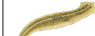

စာမျက်နှာ ၅၃ – ၅၄ · အပိုင်း (၆-၁)
၆-၁ သက်ရှိများ၏ မျိုးပွားခြင်း
Reproduction of Living Things
သက်ရှိများ မျိုးသုဉ်းပျောက်ကွယ်မှု မဖြစ်စေရန် မျိုးပွားခြင်းဖြင့် မိမိ၏မျိုးဆက်များကို ဆက်လက် တည်တံ့စေနိုင်သည်။
စာမျက်နှာ ၅၃ · ဆွေးနွေးရန်
လုပ်ငန်း (၁)
မျိုးပွားခြင်းဆိုသည်မှာ အဘယ်နည်း။ ပတ်ဝန်းကျင်တွင် မည်သည့်သက်ရှိများ၏ မျိုးပွားခြင်းကို မြင်ဖူးသနည်း။
မျိုးပွားခြင်းဆိုသည်မှာ သက်ရှိများတွင် ယင်းတို့နှင့် မျိုးစိတ်တူသက်ရှိများကို ပွားများပေးနိုင်သော ဖြစ်စဉ်ဖြစ်သည်။
ပတ်ဝန်းကျင်တွင် ကြက်၊ ခွေး၊ ကြောင်၊ ငှက်ပျောပင်၊ သရက်ပင်နှင့် နှင်းဆီပင်တို့ မျိုးပွားခြင်းကို မြင်ဖူးနိုင်သည်။
စာမျက်နှာ ၅၃ · အုပ်စုလိုက်
လုပ်ငန်း (၂)
ပေးထားသောသက်ရှိများသည် မည်သို့ မျိုးပွားကြပါသနည်း။ အုပ်စုလိုက် ဆွေးနွေးဖြေဆိုပါ။
အောက်ပါ ပုံ (၆-၁) ဓာတ်ပုံ (၄) ပုံကို စစ်ဆေး၍ အဖြေရှာပါ။
လိင်ရှိမျိုးပွားခြင်း
စွယ်တော်ပင်
ပန်းပွင့်ပြီး အသီးတောင့်ထဲမှ အစေ့များ ထွက်ရှိသည်။
ပန်းပွင့်အတွင်း အဖိုဂမိနှင့် အမဂမိ ပေါင်းစပ်၍ အစေ့ (Seed) မှတစ်ဆင့် အပင်သစ်ပေါက်သည်။
လိင်မဲ့ · ပင်ပိုင်းမျိုးပွားခြင်း
ရွက်ကျပင်ပေါက်ပင်
အရွက်အနားစွန်းများမှ အပင်ပေါက်ငယ်များ ထွက်ပေါ်လာသည်။
ပန်းပွင့်အစေ့မလိုဘဲ အရွက် (Leaf) မှ မူလအပင်နှင့် ထပ်တူသော အပင်သစ်များ ပွားများလာသည်။
လိင်ရှိမျိုးပွားခြင်း
ပန်ဒါဝက်ဝံ
ဖခင်နှင့် မိခင်တို့ ပေါင်းစပ်၍ သားငယ်မွေးဖွားပေးသည်။
အထီး (ဖခင်) နှင့် အမ (မိခင်) တို့ ပါဝင်သော လိင်ရှိမျိုးပွားခြင်း ဖြင့် သားငယ်မွေးဖွားသည်။
လိင်မဲ့မျိုးပွားခြင်း
ဟိုက်ဒရာ (Hydra)
မိခင်ခန္ဓာကိုယ်ဘေးမှ အဖူး (Bud) ထွက်၍ ပွားများသည်။
အထီးအမ မလိုဘဲ ဖူးထွက်ခြင်း (Budding) ဖြင့် မူလသတ္တဝါနှင့် ထပ်တူသော သတ္တဝါသစ် ဖြစ်ပေါ်သည်။
၁။ လိင်ရှိမျိုးပွားခြင်း (Sexual Reproduction)
သက်ရှိများတွင် အဖို၊ အမ ရှိရမည်။ အထီး (ဖခင်) + အမ (မိခင်) → သားသမီး။
အဖိုဂမိနှင့် အမဂမိတို့ ပေါင်းစပ်၍ အပင်ပေါက်သည်။ ဂမိဆိုသည်မှာ မျိုးပွားဆဲလ် ဖြစ်သည်။
ဥပမာ (၁) · မြင်းထီး + မြင်းမ —(သန္ဓေအောင်)→ မြင်းလေးမွေးဖွား
ဥပမာ (၂) · သရက်ပွင့် — အဖိုဂမိ + အမဂမိ —(အစေ့)→ သရက်ပင်ပေါက်
၂။ လိင်မဲ့မျိုးပွားခြင်း (Asexual Reproduction)
အထီး၊ အမ ရှိရန်မလို။ မူလသက်ရှိမှ ၎င်းနှင့် ထပ်တူသော သက်ရှိများ ပွားများလာခြင်းဖြစ်သည်။
အပိုင်းပိုင်းပြတ်ခြင်း (fragmentation) · ဥပမာ - ပလန်နေးရီးယား
ပင်ပိုင်းမျိုးပွားခြင်း (vegetative propagation) · ဥပမာ - အာလူး
၁။ သင်သိသော မျိုးပွားခြင်းများကို ဥပမာဖြင့် ဖော်ပြပါ။
လိင်ရှိမျိုးပွားခြင်း — စွယ်တော်ပင်၊ သရက်ပင်၊ ပန်ဒါဝက်ဝံ၊ မြင်း
လိင်မဲ့မျိုးပွားခြင်း — ရွက်ကျပင်ပေါက်ပင်၊ ဟိုက်ဒရာ၊ ပလန်နေးရီးယား၊ အာလူးပင်
၂။ ပေးထားသောပုံများမှ သက်ရှိများသည် မည်သည့်မျိုးပွားခြင်းဖြင့် မျိုးပွားကြသနည်း။

(ဂ) ပလန်နေးရီးယား (Planaria)
၃။ ပင်ပိုင်းမျိုးပွားခြင်း၏ အားသာချက်များကို ဖော်ပြပါ။
- အစေ့မရှိသော အပင်များ (ဥပမာ - ကြံပင်၊ ငှက်ပျောပင်) ကိုပင် လျင်မြန်စွာ မျိုးပွားစိုက်ပျိုးနိုင်သည်။
- မိခင်အပင်၏ ကောင်းမွန်သော ဂုဏ်သတ္တိများနှင့် ထပ်တူညီသော အပင်သစ်များ ရရှိနိုင်သည်။
- အစေ့မှ စိုက်ပျိုးခြင်းထက် အချိန်တိုအတွင်း ကြီးထွားသီးပွင့်နိုင်သည်။